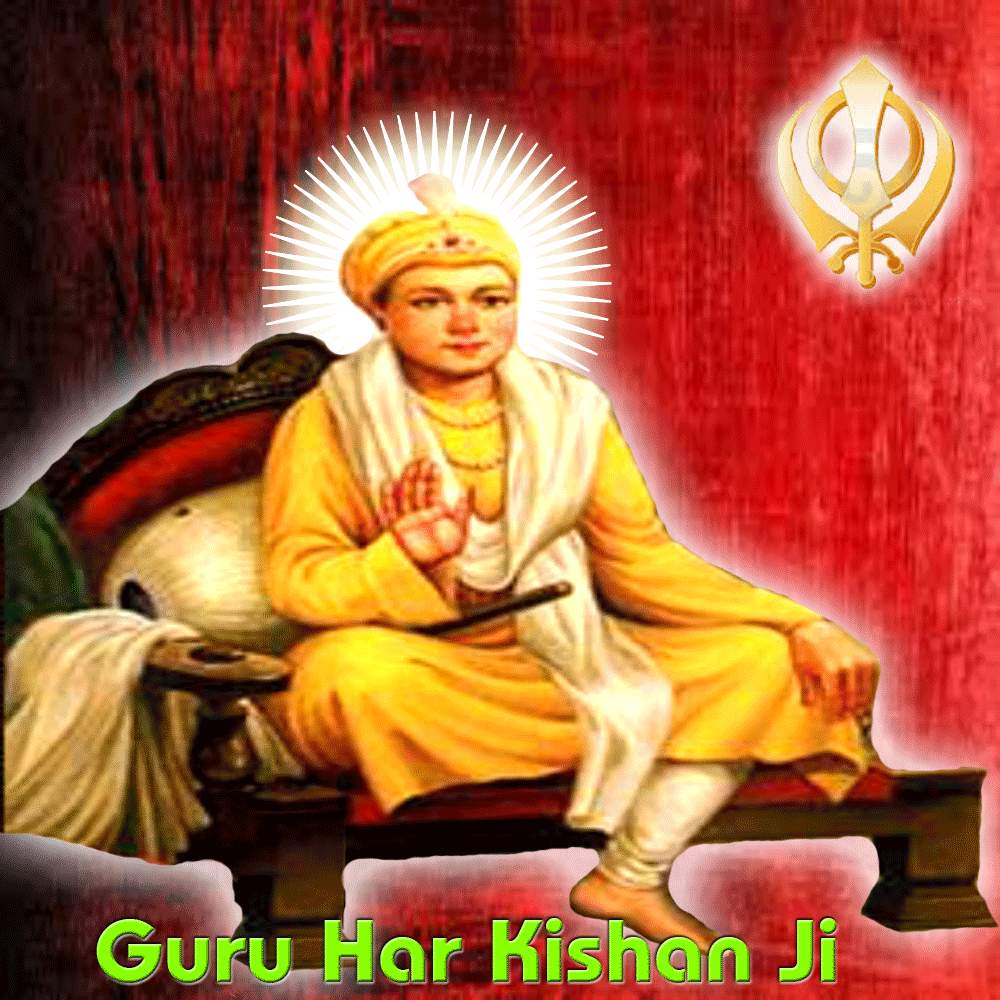

Sikhism


|  |
Mother Name: Mata Krishen Date of Birth: 23 July, 1656 Age: 8 years Place of Birth: Kiratpur Sahib Guruship: Joti-jot: 30 March, 1664,
|
Guru Har Krishan was the eighth of the ten Sikh Gurus. He became the youngest guru in Sikhism when he succeeded his father Guru Har Rai on 7 October 1661 as a five year old. His father, the seventh Sikh Guru died at the young age of 31 and named Har Krishan as his successor. Even though he was just a small child when he assumed the Guru Gaddi, Guru Har Krishan was very wise and mature beyond his age. In fact he was the one who consoled the Sikh followers upon the early death of his father and told them to accept the will of God instead of lamenting or crying. He came to be known as the Bal Guru (Child Guru) and soon became very popular among the masses. He carried on the legacy of his predecessors and possessed a rare ability in explaining passages from the Holy Granth. Mughal Emperor Aurangzeb was disturbed by the growing popularity of the young guru and asked him to come to the Mughal court. After meeting the guru Aurangzeb became convinced of his holiness. A very kind hearted person, Guru Har Krishan wholeheartedly served the patients of smallpox during an epidemic and himself contracted the disease as a result. He died of the disease at the age of eight.